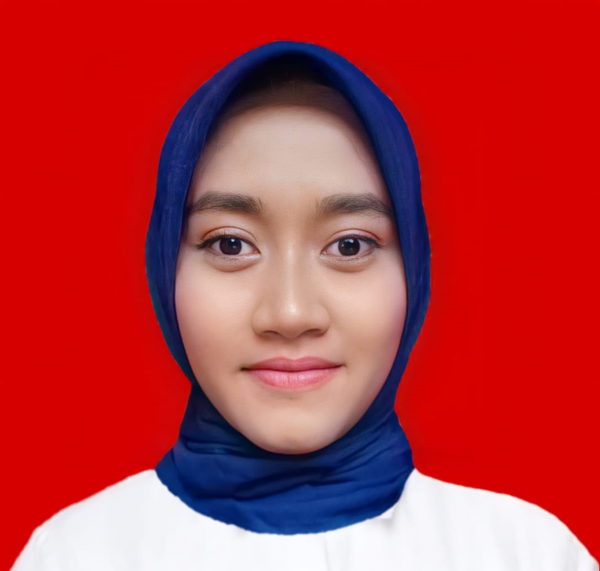

Nuri Candrawati,S.T.
Teknik Informatika | Agustus 2016 - April 2021

1. Skill kepemimpinan yang baik
2. Kemampuan kerja dibawah tekanan
3. Kreatif dan inovatif
4. Kemampuan kerja sama dengan tim maupun induvidu
5. Mengerti Teknologi
1.Web Programming (PHP, HTML, Css, MySQL)
2.Designer Mobile App ( Phottoshop, Canvas)
3.Ms.Office (Ms.Word, Ms.Excel,Power Point)
Bahasa indobesia (aktif) bahasa jawa (aktif) dan bahada inggris (pasif)